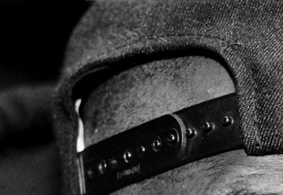
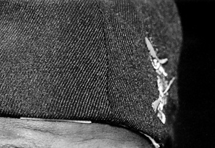
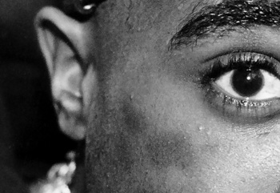
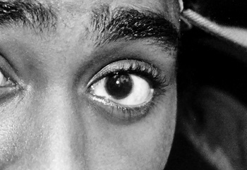
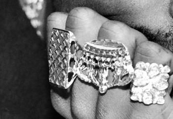
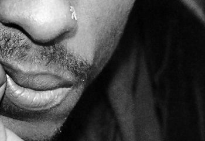
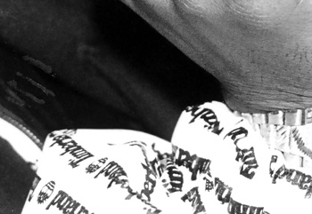
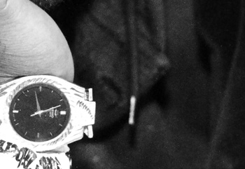

Duane "Kefee D" Davis Found Guilty of Murder
The prosecution built its entire case on Davis's own words, drawn from a memoir, a VladTV interview, and confessions to authorities, with no DNA evidence, no physical evidence, and no forensic link to the crime scene. Faced with this circumstantial foundation, the defense mounted an unusual strategy, arguing that Davis was simply a liar and a fame-seeker who fabricated his story for profit. The trial ultimately hinged on a singular question: whether a man's own admissions, made publicly and repeatedly, could be enough to secure a conviction in a case where nearly everything else was missing.
(JMK) 08/31/26 - The conviction of Duane "Keffe D" Davis for the 1996 murder of Tupac Shakur on August 31st, 2026 marks a historic moment, closing a case that has lingered in the public consciousness for three decades. For years, the drive-by shooting that killed the rap icon remained one of popular culture's most enduring mysteries, unsolved and without any arrests. That changed in 2023 when Davis was unexpectedly charged, and the subsequent trial laid bare a case built almost entirely on the words of the accused himself.
The prosecution's argument was a simple but powerful one. They did not claim that Davis was the trigger man, but rather that he was the "shot caller," the orchestrator who obtained the gun and ordered the attack. The case against the 63-year-old former gang leader hinged on his own numerous public statements. He had spoken openly about his role in the killing in a 2019 memoir, in a television interview, and in conversations with law enforcement. A prosecutor told the jury that, unlike O.J. Simpson's hypothetical book, "Duane Davis wrote the book 'I did it'." While his accounts evolved over the years, prosecutors argued the core facts remained consistent: he was in the white Cadillac from which the shots were fired.
What made this trial so unusual was the nature of the evidence, or in the eyes of the defense, the lack thereof. This was a completely circumstantial case. There was no DNA evidence, no physical evidence, and no forensic link tying Davis to the crime scene. Defense attorney Michael Sanft repeatedly challenged the jury, asking them to identify a single piece of independent evidence that placed Davis in Las Vegas on the night of September 7th, 1996. He pointed to the absence of surveillance footage, phone records, or even a simple hotel receipt. The defense argued that the prosecution's case was "drenched in circumstantial evidence," but that this evidence needed to be built on facts, which they claimed were missing.
Faced with this lack of material evidence, the defense adopted a remarkably novel strategy. They did not try to defend Davis's character; they tried to destroy it. The core of their argument was that Davis is a liar, a man seeking fame and fortune who fabricated his story to sell books and boost his profile. Sanft argued that the memoir was "fiction" and that Davis's statements were inconsistent and could not be trusted. He described them as an "embellishment" to turn a profit, even comparing Davis's account to the movie Titanic, a fictional story set against a historical event. It was a risky move, but one legal experts noted was perhaps the only shot a defense attorney has when a client has made so many damaging admissions.
The case's reliance on a single man's confession, made both to authorities and in a public forum like VladTV, creates a stark contrast with other high-profile murder trials where forensic evidence often plays a central role. In many cases, DNA, ballistics, or security footage form the backbone of the prosecution's argument. Here, those elements were entirely absent. The jury was asked to decide whether Davis's words, which he now claims were a scripted lie told under pressure and for money, were enough to prove his guilt beyond a reasonable doubt. The prosecution had already dropped a potential gang enhancement due to "witness logistics," further streamlining a case that was already unusually narrow in its scope.
Ultimately, the jury found that the power of Davis's own words was enough. After just three hours of deliberation, they convicted him of first-degree murder, a verdict that brings a form of closure to a decades-old saga but leaves the broader questions about the night of the shooting, and the identities of all involved, still lingering in the shadows.